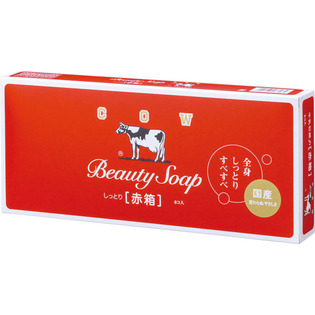
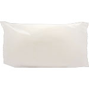

返回列表
产品名称：カウブランド 赤箱

牛乳石鹸共進社 カウブランド 赤箱 ６Ｐ
メーカー 牛乳石鹸共進社
JANコード 4901525137065
商品の特徴
全身しっとりすべすべ
国産 変わらぬやさしさ
- 成分・分量
- ＜成分＞
石ケン素地、香料、乳脂（牛乳）、スクワラン、水、ステアリン酸、酸化チタン、EDTA-4Na
- 用法及び用量
- ＜使用方法＞
1、髪の毛をまとめましょう
2、お化粧をきちんと落としましょう
3、石けんを泡立てます
（手が汚れていると泡立ちにくくなるので、まずは手洗いを。石けんが溶けやすいぬるま湯で石けんと手をぬらし、手の中で転がして溶かします。水を少量加えながら、空気を含ませるように泡立てます。）
4、たっぷり泡で洗いましょう
（泡を肌にのせて、指の腹を使って泡で肌を包み込むようにやさしく洗います。顔の中心から外に向かってゆっくりと、泡が手と肌の間のクッションになる状態を意識して洗いましょう。皮脂の多い額や小鼻のまわりなどのTゾーンから洗うのがおすすめです。）
5、ていねいにすすぎましょう
（ぬるま湯で泡をきれいに洗い流します。肌をこすりすぎないように、やさしく丁寧に。すすぎ残しは肌トラブルの原因になるので、髪の生え際やフェイスラインに泡が残らないように気をつけましょう。熱すぎるお湯は肌に負担をかけ、冷水だと毛穴が閉じてしまうので、温度にも気をつけてください。）
6、やさしくふき取りましょう（繊維の柔らかい、肌触りのよいタオルで水分をふきとります。ゴシゴシとこすって肌に刺激を与えないようにするのがポイントです。あとは、化粧水や乳液などで肌を整えてあげましょう。）